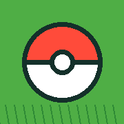
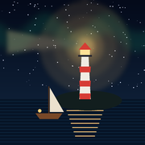

Spil

Lomme-EventyrFang figurer, ryd vejen med deres evner, og rejs fra engen til himmeløerne.

NatsejlerenSejl gennem natten, tænd fyrtårnene, og fisk i det mørke vand.
Begge spil virker uden internet, når de først er hentet. På iPhone: åbn spillet i Safari, tryk på Del og vælg "Føj til hjemmeskærm".